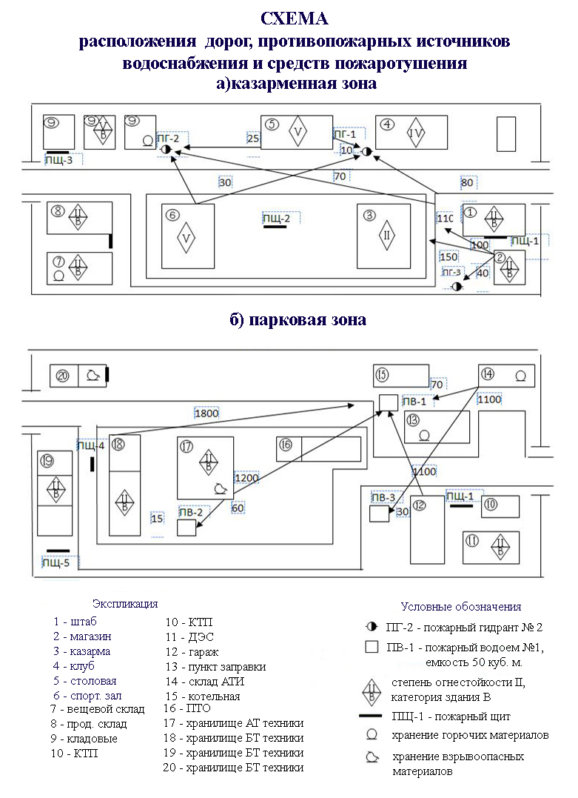

Территория воинской части должна постоянно очищаться от мусора и сухой травы. Все хранилища, навесы, площадки с боеприпасами, цехи основного и вспомогательного производства, лаборатории, линии высокого напряжения, электростанции и трансформаторные подстанции, трубы котельных, водонапорные башни, склады горючего и смазочных материалов и другого военного имущества должны быть оборудованы молниезащитными устройствами и другими инженерными системами, обеспечивающими их пожаро- и взрывобезопасность в соответствии с требованиями действующих норм и правил. Подъезды к источникам пожарного водоснабжения, к зданиям и все проезды по территории должны быть всегда свободными для движения пожарных машин.
В целях пожарной безопасности запрещается:
Дезинфекция и сушка обмундирования производятся в оборудованных типовых дезинфекционных камерах (сушилках) под постоянным наблюдением. Перед загрузкой в камеры карманы обмундирования должны быть вывернуты. При дезинфекции и сушке обмундирования запрещается:
В штабах, казармах, клубах и производственных помещениях курение разрешается только в специально отведенных местах, безопасных в отношении пожарной безопасности и оборудованных вытяжной вентиляцией.
Коридоры, проходы, основные и запасные выходы, лестничные клетки должны быть постоянно свободными и не должны загромождаться. Входные двери штабов, казарм, мастерских, клубов и других помещений должны открываться наружу. Забивать запасные выходы и облицовывать сгораемыми материалами стены и потолки лестничных клеток и коридоров запрещается.
Средства пожаротушения, водоемы, пожарные гидранты и краны должны быть исправны, а местонахождение их должно быть обозначено стандартными указателями. Количество средств пожаротушения в зданиях и на объектах определяется специальными нормами. На территории складов, парков, в ангарах и производственных помещениях средства пожаротушения должны храниться на щитах.
У телефонных аппаратов должны быть надписи с указанием номера телефона ближайшей пожарной команды, а на территории воинской части для подачи сигнала пожарной тревоги должны быть средства звуковой сигнализации.
Ежедневно, в установленное командиром полка время, перед закрытием все мастерские, хранилища, склады, парки, ангары и другие опасные в пожарном отношении производственные помещения проверяются начальниками складов, хранилищ, цехов, дежурным по парку и лицами пожарного наряда полка; все замеченные недостатки устраняются до закрытия помещений (хранилищ), а электрические сети отключаются с помощью наружных рубильников. Подтверждением выполнения требований пожарной безопасности в этих случаях является пожарный жетон, который вручается пожарным нарядом лицу, закрывающему объект. Начальники складов, хранилищ и дежурный по парку при сдаче объекта под охрану передают жетоны начальнику караула. В установленное командиром полка время начальник пожарного наряда получает пожарные жетоны у начальника караула.
Дополнительные мероприятия пожарной безопасности в воинских частях проводятся в соответствии с положениями, руководствами, наставлениями и инструкциями.
План противопожарной защиты воинской части включает:
К плану противопожарной защиты прилагается: табель пожарным постам, расчет потребностей средств пожаротушения, запасов воды, схема расположения дорог, пожарных водоисточников и средств пожаротушения

План пожарной защиты, доводится до всего личного состава части.
В воинской части ведется и храниться в делопроизводстве отдельное дело «Противопожарная защита». В дело подшивать:
План противопожарной защиты хранится:
Все экземпляры плана должны быть зарегистрированы и иметь инвентарный номер.
Отработку плана противопожарной защиты воинской части с привлечением всех сил и средств, предусмотренных расчетом, производить не реже одного раза в три месяца. Проведение учебных пожарных тревог проводить после тщательной подготовки и согласования с руководителями привлекаемых подразделений.
Условия безопасности военной службы и их общая характеристика
Условия безопасности (безопасные условия) военной службы - условия военной службы, обеспечивающие защищенность военнослужащих, местного населения и окружающей природной среды от угроз безопасности военной службы.
В повседневной деятельности Вооруженных Сил Российской Федерации выделяются общие условия безопасности военной службы, а также условия безопасности военнослужащих при исполнении обязанностей военной службы, условия безопасности местного населения и условия предотвращения вреда окружающей природной среде при осуществлении деятельности войск (сил).
Общими условиями безопасности военной службы являются:
- правопорядок и высокая воинская дисциплина в гарнизонах и воинских частях;
- служба войск, организованная в соответствии с требованиями общевоинских уставов;
- сохранность оружия, боеприпасов и взрывчатых веществ в подразделениях и воинских частях, ядерная, радиационная, химическая и биологическая безопасность, а также взрывопожаробезопасность потенциально опасных военных объектов;
- санитарно - эпидемиологическое благополучие войск (сил).
К условиям безопасности военнослужащих при исполнении обязанностей военной службы относятся:
- социальная защищенность военнослужащих;
- обеспеченность войск (сил) финансовыми и материальными средствами, материальными и иными ресурсами и услугами;
- удовлетворительное морально - психологическое состояние личного состава;
- сохранение и укрепление здоровья военнослужащих; подготовка военнослужащих к обеспечению безопасности военной службы;
- безаварийность эксплуатации вооружения и военной техники;
- противопожарная защита и местная оборона объектов;
- предупреждение актов терроризма в военных городках и на военных объектах, иных преступлений против общественной безопасности и общественного порядка.
Под условиями безопасности местного населения при осуществлении деятельности войск (сил) понимаются:
- взаимодействие органов военного управления с органами государственной власти субъектов Российской Федерации и органами местного самоуправления в целях поддержания нормальных взаимоотношений между военнослужащими и местным населением;
- размещение потенциально опасных военных объектов за пределами санитарно - защитной зоны населенных пунктов;
- информированность населения о согласованных с органами государственной власти субъектов Российской Федерации (органами местного самоуправления) ограничительных мерах, установленных в местах дислокации войск (сил);
- правовая регламентация деятельности войск (сил) при введении и поддержании режимов чрезвычайного положения, военного положения, объявлении и проведении мобилизации, их привлечении к решению задач территориальной обороны.
Условиями предотвращения вреда окружающей природной среде при осуществлении деятельности войск (сил) являются:
- соблюдение требований природоохранительного законодательства военнослужащими, их экологическое обучение и воспитание;
- проведение мероприятий по охране окружающей природной среды при различных видах деятельности войск (сил), функционировании режимных, особорежимных и особо важных военных объектов, объектов инфраструктуры;
- обеспечение экологической безопасности при создании и утилизации (уничтожении) вооружения и военной техники;
- своевременное выявление вреда, причиненного окружающей природной среде, восстановление ее нарушенного состояния.
О совершенствовании работы по обеспечению безопасности
военной службы в вооруженных силах российской федерации
Директива Министерство обороны РФ
12 июля 1997 г. N Д-10
Пожарная безопасность, электробезопасность и взрывобезопасность - как важнейшие условия безопасности военной службы
Требования пожарной безопасности
Пожарная безопасность - состояние объекта, характеризуемое возможностью предотвращения возникновения и развития пожара, а также воздействия на людей и имущество опасных факторов пожара. Пожарная безопасность объекта должна обеспечиваться системами предотвращения пожара и противопожарной защиты.
Требования пожарной безопасности в районе расположения воинской части.
Территория воинской части должна постоянно очищаться от мусора и сухой травы.
Все хранилища, навесы, площадки с боеприпасами, цехи основного и вспомогательного производства, лаборатории, линии высокого напряжения, электростанции и трансформаторные подстанции, трубы котельных, водонапорные башни, склады горючего и смазочных материалов и другого военного имущества должны быть оборудованы молниезащитными устройствами и другими инженерными системами, обеспечивающими их пожаро- и взрывобезопасность в соответствии с требованиями действующих норм и правил.
Подъезды к источникам пожарного водоснабжения, к зданиям и все проезды по территории должны быть всегда свободными для движения пожарных машин.
В целях пожарной безопасности запрещается:
- разводить огонь ближе 50 м от строений, площадок с имуществом, вооружением и военной техникой, а также курить и применять приборы с открытым огнем в парках, хранилищах, ангарах и подобных им помещениях;
- пользоваться неисправными печами, применять для растопки горючие жидкости; оставлять сгораемые материалы и имущество вблизи печей, а топящиеся печи без надзора; сушить одежду на печах, дымоходах, а также напротив топок; топить печи в часы отдыха (сна) личного состава. При топке печей дымоходы должны очищаться от сажи не реже одного раза в два месяца;
- отогревать замерзшие водопроводные и другие трубы в зданиях открытым огнем (факелами, паяльными лампами); отогревание труб и конструкций зданий производить только паром, горячей водой и другими безопасными средствами;
- устраивать в подвальных помещениях зданий мастерские и склады, связанные с обработкой или хранением горючих жидкостей и сгораемых материалов;
- преграждать доступ к средствам пожаротушения, электрощитам и электрорубильникам;
- хранить на чердаках, лестничных клетках и в коридорах горючие материалы и имущество; делать перегородки, размещать подсобные мастерские и лаборатории, а также устраивать в этих помещениях жилье;
- использовать не по назначению средства пожаротушения;
- пользоваться неисправными электропроводкой и оборудованием; применять бытовые электронагревательные приборы без несгораемых подставок, а также заменять в распределительных щитках перегоревшие предохранители (пробки) проволокой и другими предметами;
- обертывать электролампы бумагой и материей; заклеивать или закрывать провода обоями, плакатами и т.п.; применять для устройства осветительной электросети телефонные провода;
- сдавать под охрану помещения (хранилища), не проверенные в отношении пожарной безопасности.
Дезинфекция и сушка обмундирования производятся в оборудованных типовых дезинфекционных камерах (сушилках) под постоянным наблюдением. Перед загрузкой в камеры карманы обмундирования должны быть вывернуты.
При дезинфекции и сушке обмундирования запрещается:
- повышать внутри камер температуру выше установленных норм;
- перегружать камеры и сушилки обмундированием;
- загружать в камеры одежду, пропитанную маслами и горючими жидкостями;
- укладывать обмундирование на предохранительные сетки камер.
В штабах, казармах, клубах и производственных помещениях курение разрешается только в специально отведенных местах, безопасных в отношении пожарной безопасности и оборудованных вытяжной вентиляцией.
Коридоры, проходы, основные и запасные выходы, лестничные клетки должны быть постоянно свободными и не должны загромождаться. Входные двери штабов, казарм, мастерских, клубов и других помещений должны открываться наружу. Забивать запасные выходы и облицовывать сгораемыми материалами стены и потолки лестничных клеток и коридоров запрещается.
Средства пожаротушения, водоемы, пожарные гидранты и краны должны быть исправны, а местонахождение их должно быть обозначено стандартными указателями.
Количество средств пожаротушения в зданиях и на объектах определяется специальными нормами. На территории складов, парков, в ангарах и производственных помещениях средства пожаротушения должны храниться на щитах.
У телефонных аппаратов должны быть надписи с указанием номера телефона ближайшей пожарной команды, а на территории воинской части для подачи сигнала пожарной тревоги должны быть средства звуковой сигнализации.
Ежедневно, в установленное командиром полка время, перед закрытием все мастерские, хранилища, склады, парки, ангары и другие опасные в пожарном отношении производственные помещения проверяются начальниками складов, хранилищ, цехов, дежурным по парку и лицами пожарного наряда полка; все замеченные недостатки устраняются до закрытия помещений (хранилищ), а электрические сети отключаются с помощью наружных рубильников.
Подтверждением выполнения требований пожарной безопасности в этих случаях является пожарный жетон, который вручается пожарным нарядом лицу, закрывающему объект. Начальники складов, хранилищ и дежурный по парку при сдаче объекта под охрану передают жетоны начальнику караула. В установленное командиром полка время начальник пожарного наряда получает пожарные жетоны у начальника караула.
Дополнительные мероприятия пожарной безопасности в воинских частях проводятся в соответствии с положениями, руководствами, наставлениями и инструкциями.
Требования пожарной безопасности в полевых районах
При подготовке к выходу в полевые районы:
- изучить с личным составом инструкцию по мерам пожарной безопасности в полевых условиях, план эвакуации личного состава, техники и военного имущества при пожаре, расчет сил и средств, привлекаемых для тушения пожара;
- назначить пожарные расчеты и нештатные пожарные команды (при отсутствии штатных);
- проверить готовность пожарных автомобилей в частях и обеспеченность средствами пожаротушения подразделений, автомобильной и специальной техники;
- подготовить к вывозу в полевой район необходимое количество шанцевого инструмента, пожарного инвентаря и пожарных щитов;
- произвести рекогносцировку местности, нанести на рабочие карты пожароопасную обстановку, пути эвакуации личного состава и техники на случай пожара, дороги, просеки и другие естественные преграды огню, водоисточники и подъездные пути к ним.
При нахождении в полевых районах:
- определить место для несения дежурства штатными и нештатными пожарными командами;
- произвести разведку водоисточников и оборудовать к ним подъездные пути;
- определить время топки печей, назначить истопников и провести с ними инструктаж по мерам пожарной безопасности;
- все объекты укомплектовать средствами пожаротушения и пожарным инвентарем согласно норм;
- выполнить установленные руководящими документами по противопожарной службе противопожарные мероприятия при размещении палаточных городков, технических средств, парков, складов, продовольственных пунктов и других объектов.
Учитывать угрозу возникновения и распространения лесных пожаров. В целях их предупреждения территорию зон полевых районов очищать от сухой травы, валежника и порубочных остатков.
Категорически запрещаются курение, разведение костров, сжигание мусора, ремонтные работы с применением открытого огня в неподготовленных для этого местах.
При необходимости разведения костров в лесной зоне площадки для этой цели очищаются от растительного покрова до минерального слоя. Места для разведения костров должны быть удалены не менее чем на 15 метров от кустарников и деревьев.
Места для курения оборудуются не ближе 15 метров от палаток, площадки очищаются до минерального слоя, в середине их устанавливается емкость с водой для окурков.
Для сбора мусора и других отходов оборудуются специальные места за территорией полевого района.
Территория склада ГСМ должна постоянно очищаться от мусора и сухой травы и ограничиваться по периметру противопожарной полосой (полоса, очищенная от растительного покрова, шириной не менее 2 метров).
Полевые склады горючего размещаются на расстоянии не ближе 100 метров от жилой зоны и между собой. Стоянки топливозаправщиков и специального транспорта, предназначенного для перевозки нефтепродуктов, устраиваются не ближе 50 метров от основного расположения техники.
Горючее и смазочные материалы в полевых условиях хранятся в бочках, горизонтальных металлических или резинотканевых резервуарах, которые ограждаются земляным валом высотой не менее 1 метра по ширине гребня (по верху) 0,5 метра, а расстояние от стенок резервуаров до подошвы обвалования должно быть не менее 2 метров.
В целях защиты от разрядов атмосферного электричества полевые склады оборудуются отдельно стоящими молниеотводами.
Для отвода статического электричества, образующего при сливе и наливе горючего, все наземные резервуары, а также сливо-наливное оборудование, перекачивающие установки и трубопроводы должны быть надежно заземлены.
В полевых парках и складах (местах) хранения ГСМ запрещается курить, разводить огонь, пользоваться керосиновыми лампами и фонарями.
Заправка машин на полевых заправочных пунктах производится с соблюдением следующих правил:
- на заправку не допускаются машины с личным составом в кузове;
- машина устанавливается не ближе 2 м от заправочной колонки (раздаточных устройств);
- очередная машина должна находиться не ближе 5 м от заправляемой, остальные машины устанавливаются с интервалом в 1-2 м;
- двигатели заправляемых машин должны быть остановлены;
- при обливе заправляемой машины горючим не разрешается запускать двигатель до полного удаления пролитого горючего с поверхности машины; в необходимых случаях облитый горючим автомобиль выводится с заправочного пункта буксиром;
- запрещается ремонтировать и регулировать зажигание двигателя, опробовать сигнал;
- при отсутствии наружного освещения места заправки могут освещаться фарами автомобилей или аккумуляторными фонарями, а также от передвижных электростанций, установленных не ближе 10 м от заправочных устройств.
При проведении огневых работ должны соблюдаться следующие меры безопасности:
- огневые работы разрешается проводить не ближе 20 м от отдельно стоящих резервуаров и раздаточных устройств;
- на участке работы на все время ее проведения выставляется пожарный пост с необходимыми средствами пожаротушения;
- все горловины у соседних резервуаров, задвижки на трубопроводах накрываются асбестовыми покрывалами, которые в жаркое время смачиваются водой;
- в местах проведения работ с применением открытого огня устанавливаются войлочные или асбестовые щиты размером 1x2 м для предупреждения разлета искр.
Устройство и оборудование полевого парка должны обеспечивать быстрый и удобный вывод машин при возникновении пожара.
Места стоянки автомашин ограничиваются по периметру минерализованной полосой шириной не менее 2 метров и располагаются не ближе 50 метров от палаток и строений.
В полевых парках техника хранится группами не более 200 единиц в одной группе и не более 50 машин в ряду.
Расстояние между группами должно быть не менее 20 метров, между рядами – не менее 12 метров, между машинами, стоящими одна за другой, – 0,7 метра.
В случае пожара техника эвакуируется по заранее разработанному плану. Для быстрого вывода машин ежедневно назначаются дежурные тягачи со средствами буксировки.
В целях предупреждения возникновения пожара на стоянках техники запрещается:
- устанавливать технику в количестве, превышающем норму, нарушать порядок ее расстановки;
- хранить технику с открытыми горловинами топливных баков, а также при наличии течи горючего;
- хранить горючее (бензин, дизельное топливо, баллоны с газами), за исключением топлива в баках и газа в баллонах, смонтированных на автомобилях;
- хранить тару из-под легковоспламеняющихся и горючих жидкостей;
- производить ремонт техники;
- мыть бензином или керосином двигатели, детали, кузова, капоты, одежду и т.п.;
- производить заправку техники горючим;
- хранить в машинах посторонние предметы, промасленную ветошь, чехлы, спецодежду;
- применять подогреватели, опасные в пожарном отношении, и пользоваться открытым огнем;
- заряжать аккумуляторные батареи (кроме специально оборудованных устройств для подзарядки малыми токами);
- загромождать эвакуационные выезды из парка.
При устройстве палаточных городков расстояние между основанием бортов смежных палаточных гнезд должно быть не менее 2,5 метра, а в глубину – не менее 5 метров, палатки устанавливаются фронтом к преобладающему направлению ветров. На окнах палаток запрещается применять занавески и застегивать на все застежки полотнища выходов.
Электропроводка в палатках выполняется шланговым или другим изолированным защищенным проводом. Места ввода электрических проводов изолируются, а сами провода надежно закрепляются.
Электролампы размещаются не ближе 40 см от полотна палатки и других сгораемых предметов.
На группу палаток (3-4 шт.) необходимо иметь отдельную электрозащиту.
Подключение любых электронагревательных приборов, обертывание электроламп бумагой, освещение свечами, курение, хранение огнеопасных веществ и горючих жидкостей в палатках запрещается.
При установке в палатках печей-времянок выполняются следующие противопожарные мероприятия:
- при деревянном настиле основание под печью должно быть из четырех рядов кирпичей, уложенных плашмя на глиняном растворе, причем один или два нижних ряда кладки разрешается делать с шанцами (пустотами);
- печи устанавливаются не ближе 1 метра от полотна палатки и других сгораемых материалов;
- звенья труб должны плотно соединяться между собой по ходу движения дыма (не менее чем на половину диаметра трубы) и в соединениях промазываться глиняным раствором с песком или прокладываться асбестом;
- при выводе трубы в окно палатки в него должен быть вставлен лист кровельной стали размером не менее трех диаметров трубы, конец трубы должен быть выведен наружу не менее чем на 0,7 метра и заканчиваться направленным вверх патрубком длиной не менее 1 метра с искрогасителем.
Топка печей производится под постоянным наблюдением назначенным приказом командира части и проинструктированных истопников.
При топке печей запрещается:
- оставлять печи без присмотра;
- применять для растопки печей горючие жидкости;
- допускать перекаливание печей;
- сушить на печах, дымоходах и в непосредственной близости от них одежду, топливо и другие материалы;
- оставлять открытой топочную дверцу во время топки;
- оставлять в палатке золу.
Места для приготовления пищи (установка походных кухонь) и дезинфекционных камер ограничиваются вокруг противопожарной полосой шириной не менее 2 м. Походные кухни устанавливаются не ближе 10 м от палаток и техники.
При возникновении пожаров на объектах, размещенных в полевых районах, необходимо:
- подать сигнал пожарной тревоги;
- вызвать пожарные команды и дежурные подразделения;
- принять меры к тушению пожара имеющимися силами и средствами;
- оповестить должностных лиц о пожаре;
- организовать эвакуацию личного состава, вооружения, техники и имущества в безопасное место.
При тушении в первую очередь локализуются пожары, которые затрудняют выполнение боевой задачи или создают угрозу личному составу, боевой технике и имуществу.
Общие требования электробезопасности
Электробезопасность - система сохранения жизни и здоровья работников в процессе трудовой деятельности, связанной с влиянием электрического тока и электромагнитных полей. Знание основ электробезопасности обязательно для персонала, обслуживающего электроустановки и электрооборудование.
Все имеющиеся в части электроустановки должны систематически проверяться должностными лицами в сроки, определяемые их должностными обязанностями, требованиями правил электробезопасности.
При поступлении электроустановки в часть для ее приемки приказом по части назначается комиссия, в состав которой должно входить лицо, ответственное за электрохозяйство части. Приемка электроустановки оформляется актом технического состояния, о вводе ее в строй объявляется приказом по части.
К эксплуатации и обслуживанию электроустановок допускается личный состав, прошедший подготовку по устройству и безопасной эксплуатации электроустановок, имеющий необходимую квалификационную группу по электробезопасности и удовлетворяющий по состоянию здоровья соответствующим требованиям.
Запрещается:
- допускать к эксплуатации электроустановок личный состав, не имеющий соответствующую квалификационную группу;
- оставлять без наблюдения работающую электроустановку;
- подсоединять и отсоединять кабели, находящиеся под напряжением, заменять предохранители под нагрузкой;
- при исчезновении напряжения приступать к работам на данном оборудовании, проникать в заграждения, касаться токоведущих частей, не отключив соответствующий участок или всю электроустановку;
- работать под напряжением с применением ножовок, напильников, металлических метров и. т. п.;
- оставлять оголенными концы проводов, даже не находящихся под напряжением;
- при обнаружении замыкания на землю приближаться к месту замыкания ближе 4 метров в закрытых и 8 метров в открытых распределительных устройствах;
- при осмотре снимать предупредительные плакаты, ограждения, проникать за них, касаться токоведущих частей и их изоляции, производить их обтирку, чистку, устранять обнаруженные неисправности;
- использовать для работы в электроустановках длинномерные лестницы, ящики, табуретки и другие посторонние предметы;
- при работе под напряжением использовать неисправные и непроверенные (срок действия, которых истек) изолированный инструмент и защитные средства.
Работы в осветительных и силовых сетях следует производить только после отключения питающих трансформаторов и вывешивания соответствующих указателей и предупредительных знаков. Подключение к сетям вспомогательного оборудования (трансформаторов, преобразователей частоты, защитно-отключающих устройств и т. п.) и его отключение производятся электротехническим персоналом с квалификационной группой по электробезопасности не ниже третьей. Подключение электросварочного трансформатора к питающей сети необходимо производить после проверки его исправности, схемы подключения проводов и надежного заземления. Длина питающего кабеля не должна превышать 10 метров.
Запрещается подключать трансформатор к питающей сети без рубильника, автомата и других коммутационных аппаратов. Проверять наличие напряжения в сети разрешается только специальными приборами (переносной вольтметр, указатель напряжения).
Аварийные работы под напряжением не выше 380 В. разрешается проводить в присутствии наблюдающего, имеющего квалификационную группу по электробезопасности не ниже четвертой, с обязательным использованием установленных средств защиты и инструмента.
Общие требования взрывобезопасности
Взрывобезопасность - состояние объекта, при котором исключается возможность взрыва, а в случае его возникновения или даже санкционированного проведения предотвращается авария и воздействие на людей опасных факторов взрыва, обеспечивается сохранение материальных ценностей.
Для предупреждения взрыва необходимо исключить:
- образование взрывоопасной среды;
- возникновение источника инициирования взрыва.
Взрывоопасную среду могут образовать:
- смеси веществ (газов, паров, пылей) с воздухом и другими окислителями (кислород, озон, хлор, окислы азота и др.);
- вещества, склонные к взрывному превращению (ацетилен, озон, гидразин и др.).
Источником инициирования взрыва являются:
- открытое пламя, горящие и раскаленные тела;
- электрические разряды;
- тепловые проявления химических реакций и механических воздействий;
- искры от удара и трения;
- ударные волны;
- электромагнитные и другие излучения.
Предотвращение образования взрывоопасной среды и обеспечение в воздухе производственных помещений содержания взрывоопасных веществ, не превышающего нижнего концентрационного предела воспламенения с учетом коэффициента безопасности, должно быть достигнуто:
- применением герметичного производственного оборудования;
- применением рабочей и аварийной вентиляции;
- отводом, удалением взрывоопасной среды и веществ, способных привести к ее образованию;
- контролем состава воздушной среды и отложений взрывоопасной пыли.
Предотвращение образования взрывоопасной среды внутри технологического оборудования должно быть обеспечено:
- герметизацией технологического оборудования;
- поддержанием состава и параметров среды вне области и воспламенения;
- применением ингибирующих (химически активных) и флегматизирующих (инертных) добавок;
- конструктивными и технологическими решениями, принятыми при проектировании производственного оборудования и процессов.
Предотвращение возникновения источника инициирования взрыва должно быть обеспечено:
- регламентацией огневых работ;
- предотвращением нагрева оборудования до температуры самовоспламенения взрывоопасной среды;
- применением средств, понижающих давление во фронте ударной волны;
- применением материалов, не создающих при соударении искр, способных инициировать взрыв взрывоопасной среды; применением средств защиты от атмосферного и статического электричества, блуждающих токов, токов замыкания на землю и т. д.;
- применением взрывозащищенного оборудования;
- применением быстродействующих средств защитного отключения возможных электрических источников инициирования взрыва;
- ограничением мощности электромагнитных и других излучений;
- устранением опасных тепловых проявлений химических реакций и механических воздействий.
Требования к взрывозащите. Предотвращение воздействия на работающих опасных и вредных производственных факторов, возникающих в результате взрыва, и сохранение материальных ценностей обеспечиваются:
- установлением минимальных количеств взрывоопасных веществ, применяемых в данных производственных процессах;
- применением огнепреградителей, гидрозатворов, водяных и пылевых заслонов, инертных (не поддерживающих горение) газовых или паровых завес;
- применением оборудования, рассчитанного на давление взрыва;
- обваловкой и бункеровкой взрывоопасных участков производства или размещением их в защитных кабинах;
- защитой оборудования от разрушения при взрыве при помощи устройств аварийного сброса давления (предохранительные мембраны и клапаны);
- применением быстродействующих отсечных и обратных клапанов;
- применением систем активного подавления взрыва;
- применением средств предупредительной сигнализации.